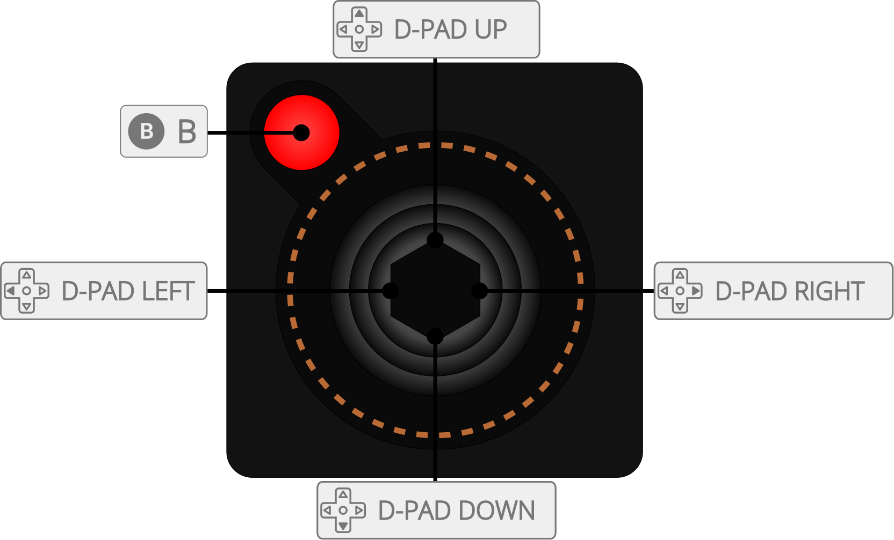

Stella is a multi-platform Atari 2600 VCS emulator.
The Stella core has been authored by
The Stella core is licensed under
A summary of the licenses behind RetroArch and its cores can be found here.
Content that can be loaded by the Stella core have the following file extensions:
RetroArch database(s) that are associated with the Stella core:
Frontend-level settings or features that the Stella core respects.
| Feature | Supported |
|---|---|
| Restart | ✔ |
| Screenshots | ✔ |
| Saves | ✕ |
| States | ✔ |
| Rewind | ✔ |
| Netplay | ✔ |
| Core Options | ✕ |
| RetroAchievements | ✔ |
| RetroArch Cheats | ✕ |
| Native Cheats | ✕ |
| Controls | ✔ |
| Remapping | ✔ |
| Multi-Mouse | ✕ |
| Rumble | ✕ |
| Sensors | ✕ |
| Camera | ✕ |
| Location | ✕ |
| Subsystem | ✕ |
| Softpatching | ✕ |
| Disk Control | ✕ |
| Username | ✕ |
| Language | ✕ |
| Crop Overscan | ✕ |
| LEDs | ✕ |
The Stella core's internal core name is 'Stella'
The Stella core saves/loads to/from these directories.
Frontend's State directory
The Stella core supports the following device type(s) in the controls menu, bolded device types are the default for the specified user(s):

| User 1 Remap descriptors | RetroPad Inputs |
|---|---|
| Fire | |
| Select | |
| Reset | |
| Up | |
| Down | |
| Left | |
| Right | |
| Left Difficulty A | |
| Right Difficulty A | |
| Left Difficulty B | |
| Left Difficulty B | |
| Color | |
| Black/White | |
| User 2 Remap descriptors | RetroPad Inputs |
|---|---|
| Fire | |
| Up | |
| Down | |
| Left | |
| Right | |